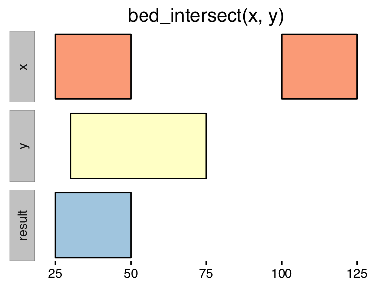

Overview
valr provides tools to read and manipulate genome intervals and signals, similar to the standalone BEDtools suite. valr enables BEDtools-like analysis in the R/RStudio environment, and uses modern R tools for a terse, expressive syntax. Compute-intensive algorithms are implemented in Rcpp/C++, and many methods take advantage of the speed and grouping capability provided by dplyr.
We provide several introductions to valr:
- This comprehensive
vignettecovering the core methods. - A tutorial that demonstrates how to use
valrin “real-world” applications. - A
shinyapplication that demonstrates interactive analysis of genome-scale data sets.
Installation
valr can be installed from github, and will be eventually deposited in CRAN.
devtools::install_github('jayhesselberth/valr')Comparison to other tools
Why another tool set for interval manipulations? We already have BEDtools, bedops, pybedtools, GenomicRanges, bedr and IRanges.
We were motivated to develop a toolset that:
- Combines analysis and visualization in RStudio.
- Can be used to generate reports with Rmarkdown.
- Is highly extensible. New tools are quickly implemented on the R side.
- Leverages the “modern R” syntax, using
dplyrand the pipe operator frommagrittr(%>%). - Maximizes speed by implementing compute-intensive algorithms in
Rcpp. - Facilitates interactive visulaizations with
shiny.
We anticipate valr will mainly be used for analysis of pre-processed data in BED, bedGraph and VCF formats. Most users will have processed their aligned reads from BAM format to bedGraph, so we do not foresee supporting BAM directly. We would entertain requests for GTF / GFF support if there is interest, as tidyr makes it easy to convert these to BED12.
Certain algorithms in valr were implemented in Rcpp (including intersect, merge, subtract, closest) to enable fluid interactive analysis. See the benchmarks section for details.
Non-standard evaluation
Several of the methods in valr use NSE for an expressive syntax. Columns are referred to by name and can be used in multiple name/value expressions for summaries.
bed_map(x, y, mean = mean(value), var = var(value))
bed_merge(x, concat = concat(value), max = max(value))Getting started
Here is an example using valr that creates
library(valr)Reading data
valr has several methods to read interval data. These methods:
- Take local files or URLs as input.
- Return a
data.frameintibble::tbl_dfformat. - Assign consistent
chrom,startandendcolumn names. - Use
readrfor speed. - Coerce column types.
The methods include:
read_bed(): read a BED3+ fileread_bed12(): read a BED12 fileread_bedgraph(): read a bedGraph fileread_genome(): read a UCSC “chrom size” fileread_vcf(): read the Variant Call Formatread_narrowpeak(): read narrowPeak filesread_broadpeak(): read broadPeak files
BED files
read_bed(valr_example('3fields.bed.gz'))
#> # A tibble: 10 × 3
#> chrom start end
#> <chr> <int> <int>
#> 1 chr1 11873 14409
#> 2 chr1 14361 19759
#> 3 chr1 14406 29370
#> 4 chr1 34610 36081
#> 5 chr1 69090 70008
#> 6 chr1 134772 140566
#> 7 chr1 321083 321115
#> 8 chr1 321145 321207
#> 9 chr1 322036 326938
#> 10 chr1 327545 328439
read_bed(n_fields = 6, valr_example('6fields.bed.gz'))
#> # A tibble: 10 × 6
#> chrom start end name score strand
#> <chr> <int> <int> <chr> <chr> <chr>
#> 1 chr1 11873 14409 DDX11L1 3 +
#> 2 chr1 14361 19759 WASH7P 10 -
#> 3 chr1 14406 29370 WASH7P 7 -
#> 4 chr1 34610 36081 FAM138F 3 -
#> 5 chr1 69090 70008 OR4F5 1 +
#> 6 chr1 134772 140566 LOC729737 3 -
#> 7 chr1 321083 321115 DQ597235 1 +
#> 8 chr1 321145 321207 DQ599768 1 +
#> 9 chr1 322036 326938 LOC100133331 3 +
#> 10 chr1 327545 328439 LOC388312 1 +
read_bed12(valr_example('12fields.bed.gz'))
#> # A tibble: 3 × 12
#> chrom start end name score strand cds_start cds_end item_rgb
#> <chr> <int> <int> <chr> <chr> <chr> <int> <int> <chr>
#> 1 chr1 4797973 4836816 testgene 1 + 4797973 4836816 .
#> 2 chr10 4848118 4880877 diffchrom 1 + 4848118 4880877 .
#> 3 chr20 5073253 5152630 negstrand 1 - 5073253 5152630 .
#> # ... with 3 more variables: exon_count <int>, exon_sizes <chr>,
#> # exon_starts <chr>Genome files
genome <- read_genome(valr_example('hg19.chrom.sizes.gz'))bedGraph files
read_bedgraph(valr_example('test.bg.gz'))
#> # A tibble: 4 × 4
#> chrom start end value
#> <chr> <int> <int> <dbl>
#> 1 chr19 49302000 49302300 -1.00
#> 2 chr19 49302300 49302600 -0.75
#> 3 chr19 49302600 49302900 -0.50
#> 4 chr19 49302900 49303200 -0.25VCF files
read_vcf() reads VCF files and assigns chrom, start and end columns to be used to downstream interval comparisons. Note the interval size is calculated as the length of the REF field in the original file.
read_vcf(valr_example('test.vcf.gz'))
#> # A tibble: 115 × 201
#> CHROM POS ID REF
#> <int> <int> <chr> <chr>
#> 1 1 10172 . CCCTAA
#> 2 1 10390 . CCCCTAACCCCTAACCCTAACCCTAACCCTAACCCTAACCCTAA
#> 3 1 10397 . CCCCTAACCCTAA
#> 4 1 10403 . ACCCTAACCCTAACCCTAACCCTAACCCTAACCCTAAC
#> 5 1 10409 . ACCCTAACCCTAACCCTAACCCTAACCCTAAC
#> 6 1 10415 . ACCCTAACCCTAACCCTAACCCTAAC
#> 7 1 10421 . ACCCTAACCCTAACCCTAAC
#> 8 1 10428 . CCCTAA
#> 9 1 10440 . C
#> 10 1 10478 . C
#> # ... with 105 more rows, and 197 more variables: ALT <chr>, QUAL <dbl>,
#> # FILTER <chr>, INFO <chr>, FORMAT <chr>, `101976-101976` <chr>,
#> # `100920-100920` <chr>, `100231-100231` <chr>, `100232-100232` <chr>,
#> # `100919-100919` <chr>, `101977-101977` <chr>, `100630-100630` <chr>,
#> # `100640-100640` <chr>, `100631-100631` <chr>, `101583-101583` <chr>,
#> # `101584-101584` <chr>, `101732-101732` <chr>, `101016-101016` <chr>,
#> # `101708-101708` <chr>, `101730-101730` <chr>, `101582-101582` <chr>,
#> # `101731-101731` <chr>, `101809-101809` <chr>, `101653-101653` <chr>,
#> # `101652-101652` <chr>, `101806-101806` <chr>, `101807-101807` <chr>,
#> # `101808-101808` <chr>, `101810-101810` <chr>, `101811-101811` <chr>,
#> # `101812-101812` <chr>, `101813-101813` <chr>, `101814-101814` <chr>,
#> # `101957-101957` <chr>, `101958-101958` <chr>, `100986-100986` <chr>,
#> # `100987-100987` <chr>, `101897-101897` <chr>, `102071-102071` <chr>,
#> # `102106-102106` <chr>, `101040-101040` <chr>, `101167-101167` <chr>,
#> # `101041-101041` <chr>, `101042-101042` <chr>, `101168-101168` <chr>,
#> # `101898-101898` <chr>, `102070-102070` <chr>, `102111-102111` <chr>,
#> # `100988-100988` <chr>, `101896-101896` <chr>, `102110-102110` <chr>,
#> # `102620-102620` <chr>, `102621-102621` <chr>, `102947-102947` <chr>,
#> # `102948-102948` <chr>, `103089-103089` <chr>, `102693-102693` <chr>,
#> # `102694-102694` <chr>, `102949-102949` <chr>, `102622-102622` <chr>,
#> # `102623-102623` <chr>, `102624-102624` <chr>, `102722-102722` <chr>,
#> # `102712-102712` <chr>, `103339-103339` <chr>, `103124-103124` <chr>,
#> # `103161-103161` <chr>, `103125-103125` <chr>, `103171-103171` <chr>,
#> # `103338-103338` <chr>, `103372-103372` <chr>, `103193-103193` <chr>,
#> # `100195-100195` <chr>, `100194-100194` <chr>, `101667-101667` <chr>,
#> # `101137-101137` <chr>, `101291-101291` <chr>, `101292-101292` <chr>,
#> # `101666-101666` <chr>, `32222-32222` <chr>, `32049-32049` <chr>,
#> # `32050-32050` <chr>, `32411-32411` <chr>, `32221-32221` <chr>,
#> # `100147-100147` <chr>, `100149-100149` <chr>, `100243-100243` <chr>,
#> # `100290-100290` <chr>, `100753-100753` <chr>, `100754-100754` <chr>,
#> # `101377-101377` <chr>, `101426-101426` <chr>, `101435-101435` <chr>,
#> # `101523-101523` <chr>, `101877-101877` <chr>, `100043-100043` <chr>,
#> # `100044-100044` <chr>, `100148-100148` <chr>, `100292-100292` <chr>,
#> # `101381-101381` <chr>, ...Interval manipulations
valr implements several methods for manipulating sets of intervals. Some methods operate on a single set of intervals, while others compare two sets of intervals.
Many methods the same name as the corresponding BEDtool, and some commonly used BEDtools are implemented as dplyr pipes (e.g., see the group_by section).
All methods accept one or more sets of x and y intervals, which must either be created using the read methods, or have chrom, start and end columns.
Single set operations
These methods operate on a single set of intervals:
bed_sort(): order intervalsbed_cluster(): Cluster (but don’t merge) overlapping/nearby intervals.bed_complement(): extract intervals not represented by an interval file.bed_merge(): combine overlapping and nearby intervals into a single interval.bed_flank(): Generate new flanking intervalsbed_slop(): Expand the size of input intervalsbed_shift(): Shift the coordinates of an input set, bounded by a genome
Sort
bed_sort orders intervals based on a specification. is_sorted asks whether a tbl is already sorted.
x <- bed_random(genome)
is_sorted(x)
#> [1] FALSE
y <- bed_sort(x)
y
#> # A tibble: 1,000,000 × 3
#> chrom start end
#> <chr> <int> <int>
#> 1 chr1 2013 3013
#> 2 chr1 3707 4707
#> 3 chr1 4175 5175
#> 4 chr1 5390 6390
#> 5 chr1 21263 22263
#> 6 chr1 22460 23460
#> 7 chr1 24283 25283
#> 8 chr1 28285 29285
#> 9 chr1 28298 29298
#> 10 chr1 28486 29486
#> # ... with 999,990 more rows
is_sorted(y)
#> [1] TRUECluster
bed_cluster identifies clustered intervals based on a distance specification and assigns them a unique .id.

x <- bed_random(genome)
y <- bed_cluster(x, max_dist = 1000)
y
#> # A tibble: 1,000,000 × 4
#> chrom start end .id
#> <chr> <int> <int> <int>
#> 1 chr15 27340860 27341860 8914
#> 2 chr4 154683840 154684840 49997
#> 3 chr3 160658822 160659822 51951
#> 4 chr19 930859 931859 311
#> 5 chrX 81997426 81998426 26461
#> 6 chr10 22078941 22079941 7318
#> 7 chr20 22747303 22748303 7259
#> 8 chr17 40361291 40362291 13402
#> 9 chr1 57154583 57155583 18509
#> 10 chr5 30534211 30535211 9739
#> # ... with 999,990 more rowsComplement
bed_complement identifies intervals in a genome that are not covered by an input.

x <- bed_random(genome)
bed_complement(x, genome)
#> # A tibble: 724,132 × 3
#> chrom start end
#> <chr> <dbl> <int>
#> 1 chr1 1 938
#> 2 chr1 1938 2066
#> 3 chr1 4002 6113
#> 4 chr1 7113 8528
#> 5 chr1 9528 14574
#> 6 chr1 15574 19699
#> 7 chr1 20699 23693
#> 8 chr1 24693 30826
#> 9 chr1 31826 34230
#> 10 chr1 35230 45605
#> # ... with 724,122 more rowsMerge
bed_merge identifies overlapping intervals and reports new merged ones. is_merged asks whether a tbl is already merged. Values from merged intervals can be reported using name / value pairs.

n <- 1e6
x <- bed_random(genome, n = n)
is_merged(x)
#> [1] FALSE
# add some signal
x <- x %>% mutate(signal = runif(n))
bed_merge(x, maxs = max(signal))
#> # A tibble: 723,547 × 4
#> chrom start end maxs
#> <chr> <int> <int> <dbl>
#> 1 chr1 2500 3500 0.1564948
#> 2 chr1 8704 9704 0.1222498
#> 3 chr1 13645 14645 0.5203007
#> 4 chr1 14683 15683 0.2399135
#> 5 chr1 21090 22090 0.4726709
#> 6 chr1 32726 33726 0.5562754
#> 7 chr1 39820 40820 0.7837789
#> 8 chr1 41156 42309 0.8239328
#> 9 chr1 45146 46146 0.7291011
#> 10 chr1 47733 49841 0.2221369
#> # ... with 723,537 more rowsFlank
bed_flank creates new intervals that flank – but do not contain – the input intervals.

bed_flank(x, genome, both = 100)
#> # A tibble: 2,000,000 × 4
#> chrom start end signal
#> <chr> <dbl> <dbl> <dbl>
#> 1 chr1 2400 2500 0.1564948
#> 2 chr1 3500 3600 0.1564948
#> 3 chr1 8604 8704 0.1222498
#> 4 chr1 9704 9804 0.1222498
#> 5 chr1 13545 13645 0.5203007
#> 6 chr1 14583 14683 0.2399135
#> 7 chr1 14645 14745 0.5203007
#> 8 chr1 15683 15783 0.2399135
#> 9 chr1 20990 21090 0.4726709
#> 10 chr1 22090 22190 0.4726709
#> # ... with 1,999,990 more rowsSlop
bed_slop pads input intervals based on a specification

bed_slop(x, genome, both = 100)
#> # A tibble: 1,000,000 × 4
#> chrom start end signal
#> <chr> <dbl> <dbl> <dbl>
#> 1 chr1 2400 3600 0.15649481
#> 2 chr1 8604 9804 0.12224982
#> 3 chr1 13545 14745 0.52030070
#> 4 chr1 14583 15783 0.23991352
#> 5 chr1 20990 22190 0.47267087
#> 6 chr1 32626 33826 0.55627541
#> 7 chr1 39720 40920 0.78377891
#> 8 chr1 41056 42256 0.04300769
#> 9 chr1 41209 42409 0.82393277
#> 10 chr1 45046 46246 0.72910115
#> # ... with 999,990 more rowsShift
bed_shift adjusts coordinates toward start or end by a defined size. Intervals created out of bounds are removed, or trimmed.

bed_shift(x, genome, size = 100)
#> # A tibble: 1,000,000 × 4
#> chrom start end signal
#> <chr> <dbl> <dbl> <dbl>
#> 1 chr13 16476999 16477999 0.74152153
#> 2 chr11 13974805 13975805 0.05144628
#> 3 chr10 44318556 44319556 0.53021246
#> 4 chr8 111302723 111303723 0.69582388
#> 5 chr14 80394414 80395414 0.68855600
#> 6 chr4 13210366 13211366 0.03123033
#> 7 chr5 142280665 142281665 0.22556253
#> 8 chr3 91415530 91416530 0.30083081
#> 9 chr1 208900124 208901124 0.63646561
#> 10 chr4 145029883 145030883 0.47902455
#> # ... with 999,990 more rowsInterval spacing
Interval spacing is easily computed using dplyr. Overlapping intervals must first be merged. Spacing for the first interval of each chromosome is undefined.
x <- bed_random(genome)
x <- bed_merge(x)
x %>%
group_by(chrom) %>%
mutate(.spacing = start - lag(end))
#> Source: local data frame [724,013 x 4]
#> Groups: chrom [25]
#>
#> chrom start end .spacing
#> <chr> <int> <int> <int>
#> 1 chr1 651 2656 NA
#> 2 chr1 4871 5871 2215
#> 3 chr1 7846 8846 1975
#> 4 chr1 9268 10268 422
#> 5 chr1 16404 17404 6136
#> 6 chr1 17626 18626 222
#> 7 chr1 27256 28723 8630
#> 8 chr1 32502 33773 3779
#> 9 chr1 41062 42062 7289
#> 10 chr1 42358 43358 296
#> # ... with 724,003 more rowsMultiple set operations
These methods compare two sets of intervals:
bed_intersect(): find overlapping intervalsbed_map(): apply a function to selected columns for overlapping intervalsbed_subtract(): Remove intervals based on overlaps between two filesbed_window(): Find overlapping intervals within a windowbed_closest(): find the closest intervals independent of overlaps
Intersection
bed_intersect is implemented using an interval tree in Rcpp. Column names in the result have .x and .y suffixes, and an .overlap column contains the size of the intersection (values of 0 indicate book-ended, or touching intervals). See the benchmarks section for timing. Though bed_intersect is pretty fast already, we intend to further improve upon this by parallization with RcppParallel.

# intersect two sets of 1e6 intervals from hg19
x <- bed_random(genome)
y <- bed_random(genome)
bed_intersect(x, y)
#> # A tibble: 647,258 × 6
#> chrom start.x end.x start.y end.y .overlap
#> <chr> <int> <int> <int> <int> <int>
#> 1 chr1 24102 25102 23669 24669 567
#> 2 chr1 24102 25102 24538 25538 564
#> 3 chr1 41156 42156 42140 43140 16
#> 4 chr1 42365 43365 42140 43140 775
#> 5 chr1 42365 43365 42729 43729 636
#> 6 chr1 44327 45327 44203 45203 876
#> 7 chr1 44327 45327 44239 45239 912
#> 8 chr1 59363 60363 60073 61073 290
#> 9 chr1 65308 66308 64868 65868 560
#> 10 chr1 66312 67312 66818 67818 494
#> # ... with 647,248 more rows
# A records with no overlaps (i.e., `-v`)
bed_intersect(x, y, invert = TRUE)
#> Source: local data frame [523,952 x 3]
#> Groups: chrom [25]
#>
#> chrom start end
#> <chr> <int> <int>
#> 1 chrY 59352572 59353572
#> 2 chrY 59348610 59349610
#> 3 chrY 59347839 59348839
#> 4 chrY 59343083 59344083
#> 5 chrY 59319715 59320715
#> 6 chrY 59318945 59319945
#> 7 chrY 59318150 59319150
#> 8 chrY 59308226 59309226
#> 9 chrY 59296939 59297939
#> 10 chrY 59286391 59287391
#> # ... with 523,942 more rowsOne can achieve behaviour similar to BEDtools by combining bed_intersect with dplyr tools.
# `x` records with overlaps (i.e., `-wa`)
bed_intersect(x, y) %>% select(chrom, start = start.x, end = end.x)
#> # A tibble: 647,258 × 3
#> chrom start end
#> <chr> <int> <int>
#> 1 chr1 24102 25102
#> 2 chr1 24102 25102
#> 3 chr1 41156 42156
#> 4 chr1 42365 43365
#> 5 chr1 42365 43365
#> 6 chr1 44327 45327
#> 7 chr1 44327 45327
#> 8 chr1 59363 60363
#> 9 chr1 65308 66308
#> 10 chr1 66312 67312
#> # ... with 647,248 more rows
# `y` records with overlaps (i.e., `-wb`)
bed_intersect(x, y) %>% select(chrom, start = start.y, end = end.y)
#> # A tibble: 647,258 × 3
#> chrom start end
#> <chr> <int> <int>
#> 1 chr1 23669 24669
#> 2 chr1 24538 25538
#> 3 chr1 42140 43140
#> 4 chr1 42140 43140
#> 5 chr1 42729 43729
#> 6 chr1 44203 45203
#> 7 chr1 44239 45239
#> 8 chr1 60073 61073
#> 9 chr1 64868 65868
#> 10 chr1 66818 67818
#> # ... with 647,248 more rows
# Unique records in `x` (i.e., `-u`)
bed_intersect(x, y) %>% select(chrom, start = start.x, end = end.x) %>% unique()
#> # A tibble: 475,978 × 3
#> chrom start end
#> <chr> <int> <int>
#> 1 chr1 24102 25102
#> 2 chr1 41156 42156
#> 3 chr1 42365 43365
#> 4 chr1 44327 45327
#> 5 chr1 59363 60363
#> 6 chr1 65308 66308
#> 7 chr1 66312 67312
#> 8 chr1 72546 73546
#> 9 chr1 92780 93780
#> 10 chr1 93479 94479
#> # ... with 475,968 more rows
# Count `y` intervals that intersect each `x` interval
bed_intersect(x, y) %>% group_by(chrom, start.x, end.x) %>% summarize(count = n())
#> Source: local data frame [475,978 x 4]
#> Groups: chrom, start.x [?]
#>
#> chrom start.x end.x count
#> <chr> <int> <int> <int>
#> 1 chr1 24102 25102 2
#> 2 chr1 41156 42156 1
#> 3 chr1 42365 43365 2
#> 4 chr1 44327 45327 2
#> 5 chr1 59363 60363 1
#> 6 chr1 65308 66308 1
#> 7 chr1 66312 67312 3
#> 8 chr1 72546 73546 1
#> 9 chr1 92780 93780 1
#> 10 chr1 93479 94479 1
#> # ... with 475,968 more rowsMap
bed_map maps signals onto intervals. Summary statistics for mapped signals can be specific using NSE with name / value pairs.
#> Warning: Removed 1 rows containing missing values (geom_label).
bedfile <- valr_example('genes.hg19.chr22.bed.gz')
bgfile <- valr_example('hela.h3k4.chip.bg.gz')
x <- read_bed(bedfile, n_fields = 6)
y <- read_bedgraph(bgfile)
bed_map(x, y, means = mean(value.y), sds = sd(value.y))
#> # A tibble: 591 × 5
#> chrom start.x end.x means sds
#> <chr> <int> <int> <dbl> <dbl>
#> 1 chr22 16150259 16193004 7.914286 7.5707309
#> 2 chr22 16162065 16172265 1.000000 NA
#> 3 chr22 16256331 16287937 1.000000 0.0000000
#> 4 chr22 17071647 17073700 1.000000 0.0000000
#> 5 chr22 17082800 17129720 1.117647 0.3270350
#> 6 chr22 17134598 17156430 1.294118 0.5878675
#> 7 chr22 17227758 17229328 1.000000 NA
#> 8 chr22 17264305 17302584 1.250000 0.5084039
#> 9 chr22 17308363 17310225 1.333333 0.5773503
#> 10 chr22 17385314 17385395 1.000000 NA
#> # ... with 581 more rowsSubtract
bed_substract() removes x intervals that intersect with y.

x <- bed_random(genome)
y <- bed_random(genome)
bed_subtract(x, y)
#> # A tibble: 724,003 × 3
#> chrom start end
#> <fctr> <int> <int>
#> 1 chr1 1379 2379
#> 2 chr1 2697 4252
#> 3 chr1 13133 14133
#> 4 chr1 21038 21082
#> 5 chr1 23698 24698
#> 6 chr1 29153 30153
#> 7 chr1 37940 38940
#> 8 chr1 40432 40852
#> 9 chr1 44472 45472
#> 10 chr1 45651 47129
#> # ... with 723,993 more rowsWindow
bed_window() identifies y intervals that intersect an expanded window of x intervals.

x <- bed_random(genome, n = 100)
y <- bed_random(genome, n = 100)
# a few intersections
bed_intersect(x, y)
#> # A tibble: 0 × 6
#> # ... with 6 variables: chrom <chr>, start.x <int>, end.x <int>,
#> # start.y <int>, end.y <int>, .overlap <int>
# can be expanded by casting a wider net
bed_window(x, y, genome, both = 1e6)
#> # A tibble: 7 × 6
#> chrom start.x end.x start.y end.y .overlap
#> <chr> <int> <int> <int> <int> <int>
#> 1 chr10 59964124 59965124 59960431 59961431 1000
#> 2 chr11 83069781 83070781 82802163 82803163 1000
#> 3 chr12 81829263 81830263 82534844 82535844 1000
#> 4 chr18 9054851 9055851 9158972 9159972 1000
#> 5 chr18 42140197 42141197 41659806 41660806 1000
#> 6 chr3 62841128 62842128 62526478 62527478 1000
#> 7 chrY 33043197 33044197 32042567 32043567 370Closest
bed_closest() identifies y intervals that are closest to x.

x <- bed_random(genome, n = 100)
y <- bed_random(genome, n = 100)
bed_closest(x, y)
#> # A tibble: 95 × 7
#> chrom start.x end.x start.y end.y .overlap .distance
#> <chr> <int> <int> <int> <int> <int> <int>
#> 1 chr1 18492087 18493087 19390794 19391794 0 897707
#> 2 chr1 63756939 63757939 59741807 59742807 0 -4014132
#> 3 chr1 178467124 178468124 190411099 190412099 0 11942975
#> 4 chr1 190548070 190549070 190411099 190412099 0 -135971
#> 5 chr1 192736619 192737619 190411099 190412099 0 -2324520
#> 6 chr1 229322176 229323176 229502740 229503740 0 179564
#> 7 chr1 243698261 243699261 229502740 229503740 0 -14194521
#> 8 chr10 4006237 4007237 8375718 8376718 0 4368481
#> 9 chr10 34237419 34238419 30237621 30238621 0 -3998798
#> 10 chr10 109761141 109762141 116046585 116047585 0 6284444
#> # ... with 85 more rowsRandomzing intervals
valr provides methods for creating new random intervals or permutations of existing intervals:
bed_randomgenerates random intervals from an inputgenome.bed_shuffleshuffles coordinates given a set of input intervals.- Random sampling of input intervals is done with
dplyr.
Random
bed_random generates random intervals from an input genome. The numbers of intervals from each chrom are proporitional to each chrom size.
x <- bed_random(genome, n = 1e6, length = 1e3)
x
#> # A tibble: 1,000,000 × 3
#> chrom start end
#> <chr> <int> <int>
#> 1 chr1 166749241 166750241
#> 2 chrY 3026622 3027622
#> 3 chr22 40955151 40956151
#> 4 chrX 134507457 134508457
#> 5 chr4 132332641 132333641
#> 6 chr9 82958038 82959038
#> 7 chr2 44702096 44703096
#> 8 chr5 6589088 6590088
#> 9 chr6 170020806 170021806
#> 10 chr15 99745583 99746583
#> # ... with 999,990 more rows
# numbers of sampled intervals are proportional to chrom size
group_by(x, chrom) %>% summarize(n = n()) %>% arrange(desc(n))
#> # A tibble: 25 × 2
#> chrom n
#> <chr> <int>
#> 1 chr1 80948
#> 2 chr2 78780
#> 3 chr3 64465
#> 4 chr4 61729
#> 5 chr5 58348
#> 6 chr6 54956
#> 7 chr7 51035
#> 8 chrX 50033
#> 9 chr8 47191
#> 10 chr9 45712
#> # ... with 15 more rowsSample
Sampling can be done using dplyr:
x <- bed_random(genome)
# sample by number
sample_n(x, 1e3, replace = FALSE)
#> # A tibble: 1,000 × 3
#> chrom start end
#> <chr> <int> <int>
#> 1 chr6 88965026 88966026
#> 2 chr9 51878911 51879911
#> 3 chr17 71179161 71180161
#> 4 chr3 36709425 36710425
#> 5 chr10 111363341 111364341
#> 6 chr6 135120314 135121314
#> 7 chr14 66103281 66104281
#> 8 chr2 231848959 231849959
#> 9 chr9 44657 45657
#> 10 chr3 147527963 147528963
#> # ... with 990 more rows
# or fraction
sample_frac(x, 0.1, replace = FALSE)
#> # A tibble: 100,000 × 3
#> chrom start end
#> <chr> <int> <int>
#> 1 chr15 11625869 11626869
#> 2 chr5 66811524 66812524
#> 3 chr4 173069294 173070294
#> 4 chr8 57675152 57676152
#> 5 chr7 147991552 147992552
#> 6 chr5 29351597 29352597
#> 7 chr14 60845266 60846266
#> 8 chr3 52885304 52886304
#> 9 chr5 166723494 166724494
#> 10 chr7 134445174 134446174
#> # ... with 99,990 more rows
# or sample intervals within groups
group_by(x, chrom) %>% sample_n(1)
#> Source: local data frame [25 x 3]
#> Groups: chrom [25]
#>
#> chrom start end
#> <chr> <int> <int>
#> 1 chr1 210406322 210407322
#> 2 chr10 129085424 129086424
#> 3 chr11 51388305 51389305
#> 4 chr12 115055440 115056440
#> 5 chr13 13425723 13426723
#> 6 chr14 91377630 91378630
#> 7 chr15 23421155 23422155
#> 8 chr16 4002153 4003153
#> 9 chr17 67559067 67560067
#> 10 chr18 64362797 64363797
#> # ... with 15 more rowsShuffle
bed_shuffle shuffles input intervals. Interval sizes are equal in the input and output.

y <- bed_shuffle(x, genome)
y
#> # A tibble: 1,000,000 × 3
#> chrom start end
#> <fctr> <int> <int>
#> 1 chr7 77526969 77527969
#> 2 chr10 50255096 50256096
#> 3 chr19 33432292 33433292
#> 4 chr6 47523906 47524906
#> 5 chr12 124017738 124018738
#> 6 chr6 101876439 101877439
#> 7 chr1 119218825 119219825
#> 8 chr3 184813716 184814716
#> 9 chr1 170167164 170168164
#> 10 chr2 17540570 17541570
#> # ... with 999,990 more rows
any(x$start == y$start)
#> [1] FALSE
all(x$end - x$start == y$end - y$start)
#> [1] TRUEOther topics
Interval Statistics
valr provides several methods to assess statistical properties of interval sets including:
bed_fisher(): measure overlap significance of two sets of intervals.bed_absdist(): quantify absolute distance between query intervals and closest reference intervalsbed_reldist(): quantify relative distances between query intervals and closest reference intervalsbed_jaccard(): quantify extent of overlap between two sets of intervals
Several of these methods were described in the Genometricorr software package.
Fisher’s test
The Fisher’s test assesses whether two sets of intervals are drawn from the same background genome.
x <- bed_random(genome)
y <- bed_random(genome)
bed_fisher(x, y, genome)
#> estimate p.value conf.low conf.high method
#> 1 2.347799 0 2.333782 2.361886 Fisher's Exact Test for Count Data
#> alternative
#> 1 two.sidedAbsolute distance
bed_absdist() computes the absolute distance between the midpoint of query intervals and the closest midpoints of a set of reference intervals. Absolute distances are scaled by the inter-reference gap for the chromosome as follows. For Q total query points and R reference points on a chromosome, scale the distance for each query point i to the closest reference point by the inter-reference gap for each chromosome.
\[ d_i(x,y) = min_{\substack{k}}(|q_i - r_k|)\frac{R}{Length\ of\ chromsome} \]
By default both absolute and scaled distances are reported as absdist and scaled_absdist respectively.
x <- bed_random(genome)
y <- bed_random(genome)
bed_absdist(x, y, genome)
#> # A tibble: 1,000,000 × 5
#> chrom start end absdist scaled_absdist
#> <chr> <int> <int> <dbl> <dbl>
#> 1 chr1 445 1445 4841 1.57117978
#> 2 chr1 1822 2822 3464 1.12426498
#> 3 chr1 3355 4355 1931 0.62671931
#> 4 chr1 5563 6563 277 0.08990225
#> 5 chr1 6856 7856 926 0.30053966
#> 6 chr1 7150 8150 632 0.20511994
#> 7 chr1 14374 15374 1984 0.64392082
#> 8 chr1 20874 21874 3501 1.13627358
#> 9 chr1 22324 23324 4951 1.60688104
#> 10 chr1 24445 25445 3224 1.04637133
#> # ... with 999,990 more rowsRelative distance
bed_reldist() computes the relative distance between a query interval and the two closest reference intervals. The relative distance can range between [0,0.5]. If the overall distribution of distances is biased toward zero, then the query and reference intervals tend to be closer in space (17). By default a summary with the frequency of each relative distance is reported.
x <- bed_random(genome)
y <- bed_random(genome)
bed_reldist(x, y)
#> # A tibble: 51 × 4
#> reldist counts total freq
#> <dbl> <int> <int> <dbl>
#> 1 0.00 19776 999939 0.01977721
#> 2 0.01 20063 999939 0.02006422
#> 3 0.02 20054 999939 0.02005522
#> 4 0.03 19857 999939 0.01985821
#> 5 0.04 20085 999939 0.02008623
#> 6 0.05 20197 999939 0.02019823
#> 7 0.06 19816 999939 0.01981721
#> 8 0.07 20259 999939 0.02026024
#> 9 0.08 19973 999939 0.01997422
#> 10 0.09 19847 999939 0.01984821
#> # ... with 41 more rowsJaccard similarity
bed_jaccard() quantifies the extent of overlap between to sets of intervals. The Jaccard statistic takes values of [0,1] and is measured as:
\[ J(x,y) = \frac{\mid x \bigcap y \mid} {\mid x \bigcup y \mid} = \frac{\mid x \bigcap y \mid} {\mid x \mid + \mid y \mid - \mid x \bigcap y \mid} \]
x <- bed_random(genome)
y <- bed_random(genome)
bed_jaccard(x, y)
#> # A tibble: 1 × 4
#> len_i len_u jaccard n
#> <int> <int> <dbl> <int>
#> 1 322941158 2000000000 0.192564 646741Benchmarks
# two sets of 1e6 random 1 kb intervals from hg19
x <- bed_random(genome)
y <- bed_random(genome)
library(microbenchmark)
microbenchmark(
bed_random(genome),
bed_closest(x, y),
bed_intersect(x, y),
bed_merge(x),
bed_subtract(x, y),
bed_complement(x, genome),
bed_shuffle(x, genome),
times = 1,
unit = 's'
)
#> Unit: seconds
#> expr min lq mean median
#> bed_random(genome) 0.1210124 0.1210124 0.1210124 0.1210124
#> bed_closest(x, y) 4.6828317 4.6828317 4.6828317 4.6828317
#> bed_intersect(x, y) 2.1265134 2.1265134 2.1265134 2.1265134
#> bed_merge(x) 2.3916764 2.3916764 2.3916764 2.3916764
#> bed_subtract(x, y) 2.3092343 2.3092343 2.3092343 2.3092343
#> bed_complement(x, genome) 2.7562773 2.7562773 2.7562773 2.7562773
#> bed_shuffle(x, genome) 0.9558835 0.9558835 0.9558835 0.9558835
#> uq max neval
#> 0.1210124 0.1210124 1
#> 4.6828317 4.6828317 1
#> 2.1265134 2.1265134 1
#> 2.3916764 2.3916764 1
#> 2.3092343 2.3092343 1
#> 2.7562773 2.7562773 1
#> 0.9558835 0.9558835 1